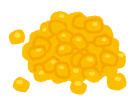

Game of Tones
Learn about tones in Santiago Laxopa Zapotec!
In Santiago Laxopa Zapotec, words have different melodies. For instance, in some words, the pitch will start high and end low, and in others, the pitch will stay low through the whole word.
On this page, you can play our "Game of Tones", where you can learn some Santiago Laxopa Zapotec words, and practice listening to their melodies.
To start, see if you can hear the difference between the two words below: beku' "dog" and beye' "snow". Click on the blue boxes to hear the words and listen to their melodies.


Can you hear how beku' starts high and falls, and beye' stays very flat? These are two of the melodies that words can have in Santiago Laxopa Zapotec.
Below, we'll give you some more words, and you can see if you can figure out which words have which melodies.
Round 1
The six words below are examples of two different melodies. See if you can figure out which is which!



The words beku' "dog", xhua' "corn", and xhile' "sheep", all have the same melody, that starts high and ends low. The words beye' "snow", lage' "leaf", and ya'ado "mountain" all have a different melody, that stays flat and low.
Round 2
Now let's see some more words. Four of these words have the melodies that you just heard in Round 1, but three of them have a new melody. See if you can hear which words have the new melody.


The words yu'u "house" and biche' "cricket" have the same falling melody as beku', and ya'a "market" and yi'inhdo' "mole" have the same flat melody as beye'. The other three words (duah "agave", yixu' "avocado", and yu'u "lime (cal)") have the new melody, which starts low and ends high.
Did you notice that even though the words for house and lime are both spelled the same, you can tell them apart by their different melodies?
How did you do? Was it hard to hear the melodies? If you don't speak a language with tone, it can be difficult to tell the difference between one melody or another! But in languages with tone like Santiago Laxopa Zapotec, it's just another part of daily language use.
This game was put together by Nido de Lenguas, a collaboration between Senderos and linguists at UC Santa Cruz. Our mission is to share the beauty and value of Oaxacan languages like Santiago Laxopa Zapotec. Visit our website to learn more, and sign up for free classes in Santiago Laxopa Zapotec.